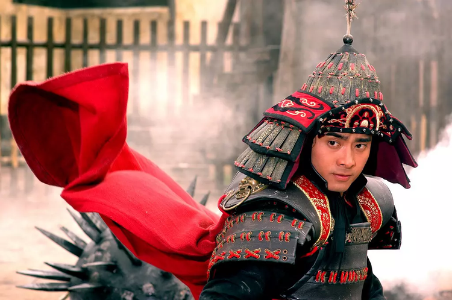
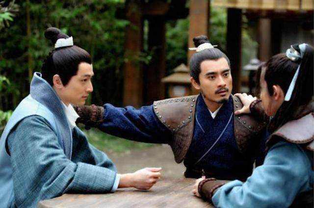
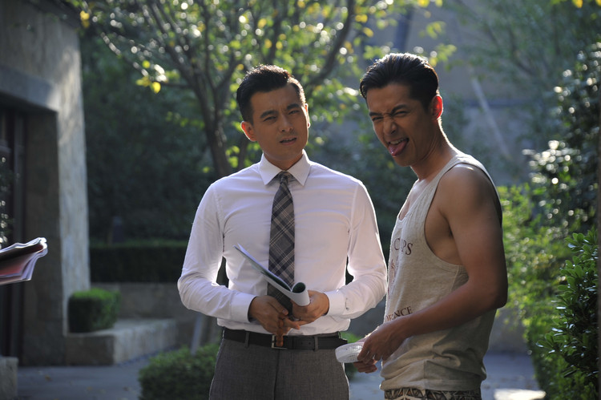

专访专访《猎场》陈龙：我和胡歌才是真官配！
猫眼电视剧 11-14 22:17 20305
每一个成功男人背后，都有一个默默付出的女人，而对于《猎场》来说，一个成功的郑秋冬背后，并不是三个女朋友的功劳，而是这个叫做“林拜”的大老爷们
这并不是陈龙第一次做胡歌“背后的男人”，他们的三世情缘从《少年杨家将》开始。曾经的六郎和五哥，到《琅琊榜》里的梅长苏和蒙大统领，再到《猎场》的郑秋冬和林拜，胡歌和陈龙之间逐渐建立了一种默契，以至于无数的网友称他们才是《猎场》真正的“官配”。

除了兄弟之间的默契外，陈龙的太太章龄之在剧中饰演了胡歌的女朋友，这段“三角恋”无疑是对“官配”的再度考验。
在接受猫眼记者的采访时，陈龙毫不避讳地大笑，对“官配”一词表达了极度赞赏，同时对于他与胡歌、章龄之的这段“三角恋”，他不仅没有觉得尴尬，反而有意无意地调戏起了“单身狗”胡歌，玩得不亦说乎。
其实我们才是“真官配”
在《少年杨家将》里，陈龙是胡歌的五哥杨延德，胡歌饰演的杨六郎则无时不刻在照顾这个置国家安危于不顾的哥哥；在《琅琊榜》里，陈龙是胡歌的蒙大统领，是梅长苏的挚友，更是时刻为梅长苏着想出气的小天使；而到了《猎场》里，陈龙则是胡歌的引领者林拜，给郑秋冬介绍工作，指点迷津，还是他身边不离不弃的好朋友。

胡歌与陈龙的这段三世情缘，被众多网友戏称为《猎场》里真正的“官配”，对于“官配”这样的称呼，骤然听到的陈龙突然爆笑，像极了蒙大统领的神态点点头，“确实是！我毫不客气地可以这么说”，在剧中的郑秋冬和林拜不仅是工作伙伴，还是志同道合的好朋友，能够在同一个频道上聊天谈心，更能成为最佳拍档，“所以他们俩是官配我觉得太对了”。
在《琅琊榜》之后能够再度合作，陈龙形容“这是一次非常微妙的合作”。
郑秋冬与林拜相识于职介所的一次小调查中，又在MBA课程中再遇见，林拜开口便是一句，”看你很眼熟“，不得不把大家又再度拉回了曾经梅长苏和蒙大统领的记忆里。
“我们也把《琅琊榜》中梅长苏和蒙大统领的一些小感觉也延续到了这部戏”，陈龙表示《猎场》不仅是一部严肃的电视剧，正如当年那个承包了整部剧笑点的蒙大统领一般，他们还会为琅琊剧迷们奉上那些记忆尤深的笑料。
如今，距离《猎场》拍摄已过两年，盛名之时淡出演艺圈的胡歌也即将要回归，而陈龙也成为了两个孩子的爸。
对于昔日好友的决定和改变，陈龙也为他而感到高兴，“现在的他已经是非常沉稳，非常内敛，也非常智慧，有他自己对人生和世界的看法和独到的见解，他的为人处事有时也让我挺赞叹的，他的这种方式方法，很适用于他自己的一套生活方式”。
对于他人的不解，陈龙对胡歌选择出国留学而休息一年的决定并不感到意外，“他是处女座的人，据对他这么多年的了解，他一定是经过深思熟虑之后才会做这个决定”。
不管是《猎场》的回归，还是“回来上班”的宣言，陈龙也希望自己的好朋友能够得到最大的认同，“他不是选择往前冲，而是选择往后退一步，我觉得让我很惊叹，这不是每个人都能做到的，因为你在退的时候会失去很多东西。这些东西可能是很多演员做梦都想得到的东西，但是他愿意去付出或者放。”

陷入“三角恋”
对于陈龙来说，《猎场》的意义不只是和好朋友胡歌的三度合作，还有太太章龄之的共同出演。这对互怼成趣味的夫妻并不走寻常路，演情侣的并不是他们，而是章龄之和胡歌。对于这段莫名其妙的“三角恋”，陈龙看得很是坦然，没想到夫妻俩吃醋还顺带调戏了胡歌一把
“有时候我是故意捉弄他。很难得三个人在一块演戏，他们俩又演情侣，又在我面前演，我倒想看看他们怎么演，我也很好奇。有一场戏是我跟我戏里的太太，他跟龄之，我们四个一块在我们家吃饭。当时加了很多戏里和我太太很生活的东西，然后龄之看了就很生气，然后就开始跟胡歌也加这种东西。她加了没事，胡歌就有点崩溃，忽然就说别拍了，别拍了，受不了。”
像这样的“虐待单身狗”行为，只是陈龙章龄之夫妇的日常。在《猎场》开播发布会现场的时候，胡歌就没忍住控诉起了陈龙夫妇，吐槽和俩夫妇演戏是全剧难度系数最大的部分，三个人同时在现场的尴尬局面对演员及演员家属都是最大的考验。
面对好兄弟的控诉，陈龙忍不住笑了起来，其实这样的“三角恋”完全处于偶然，撒狗粮和虐胡歌也都只是剧情需要，“最早是我太太先进的这个剧组，我也跟胡歌说多照顾照顾她，然后过段时间，我也去见了导演，导演觉得很合适就定了”，就在这样误打误撞的巧合中，三个人碰到了一起去。
虽然和太太有更多的时间相处，还能同在一个剧组中工作，但陈龙表示并不太想和章龄之再度出演情侣或者夫妻。“其实夫妻在一块演戏的话，好处是大家很熟，但是不太好的地方就是太熟了”，他认为演员与演员之间应该多一些距离，彼此都会少一些顾虑，也更好碰撞出更多的火花。
和好朋友再度结缘，还能和太太陷入“三角恋”，陈龙把这样独特的体验留给了《猎场》。
像《猎场》这样五年磨一剑的作品已经不多了，不仅郑秋冬的成长需要时间，大家对《猎场》的认可也需要时间，“这就是一个很具有代表性的影视圈的工匠，默默无闻的一直在做自己的东西，当有一天把自己的作品拿出来的时候，我相信一定会惊艳到所有人。” ( 采写/ 罗雅文 )
最新评论
赵云
举报 2
成都
猎场里面很真实 以致于许多观众都不愿意接受这样的现实，不过，时间会证明一切的，给猎场点赞
赵云
举报 2
成都
猎场里面很真实 以致于许多观众都不愿意接受这样的现实，不过，时间会证明一切的，给猎场点赞
赵云
举报 2
成都
猎场里面很真实 以致于许多观众都不愿意接受这样的现实，不过，时间会证明一切的，给猎场点赞
赵云
举报 2
成都
猎场里面很真实 以致于许多观众都不愿意接受这样的现实，不过，时间会证明一切的，给猎场点赞